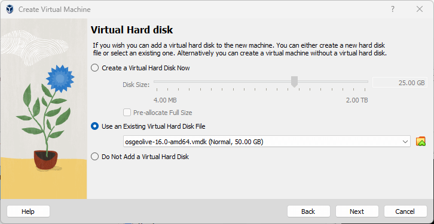

Ejecución en una máquina virtual¶
Vista General¶
Este inicio rápido describe una forma de ejecutar OSGeoLive dentro de una máquina virtual (VM) virtualBox. Para otros métodos, siga los enlaces de la sección «Ver también» a continuación.
Nota
Para obtener más información sobre los beneficios de la virtualización, consulte Virtualización en Wiki
Prerequisitos¶
Software
Descargue Virtual Box para su plataforma e instale el software. En Windows, ejecute el instalador o en sistemas Linux similares a Ubuntu, ejecute lo siguiente:
apt-get install virtualbox-oseDescargue el archivo de disco virtual OSGeo (vmdk) desde live.osgeo.org.
En osgeolive-vm, descargue el archivo 7-zip. A continuación, descomprima el archivo descargado (usando 7zip ).
Hardware
RAM: Mínimo 2 GB. El sistema Lubuntu funciona bien con 1 GB de RAM, y deberá mantener al menos la misma cantidad de memoria para algunas de sus aplicaciones (como GeoServer). Por lo tanto, se recomienda un total de 2 GB para un funcionamiento sin problemas.
Repuesto: Mínimo 20 GB de espacio en disco duro. El archivo de disco virtual (vmdk) de live.osgeo.org se descomprime a casi 10 GB. También querrá más espacio para permitir algo de espacio para trabajar en la máquina virtual. Así que un total de 20 GB es una buena recomendación.
CPU: Cualquier CPU servirá, pero un procesador que admita «Tecnología de virtualización» será más rápido. Compruebe si su ordenador es compatible con “Tecnología de Virtualización <https://www.intel.com/content/www/us/en/support/articles/000005486/processors.html>`_
Nota
La mayoría de las máquinas producidas después de 2010 cumplirán con estos requisitos.
Paso 1 : Crear una máquina virtual¶
Inicie la aplicación VirtualBox y haga clic en Nuevo. Se muestra la ventana emergente Crear máquina virtual.

Ingrese un nombre como OSGeoLive, y seleccione Linux como el «Sistema operativo», y Ubuntu como la «Versión», y luego haga clic en Siguiente.
En la siguiente pantalla, configure la memoria en al menos 1024 MB (o más si su computadora host tiene más de 4 GB, como en la captura de pantalla a continuación).

Continúe con la siguiente pantalla y seleccione Usar un archivo de disco duro virtual existente. Haga clic en el icono de carpeta para buscar dónde guardó el archivo vmdk de OSGeoLive. Seleccione el archivo, haga clic en Siguiente y Crear.
Ahora debería poder ver el OSGeoLive que aparece en su cuadro virtual.

Paso 2: Configurar la máquina virtual¶
Configuración de VM
Una vez creada la máquina virtual, haga clic en el botón Configuración. En la sección Interfaz de usuario, haga clic para seleccionar Mostrar en la parte superior de la pantalla para la mini barra de herramientas.

Vaya a la sección Pantalla y aumente la memoria de vídeo a 32 o 64 MB. En algunos sistemas operativos host, es posible que sea necesario «Habilitar la aceleración 3D» para que la pantalla funcione correctamente.

Agregar carpetas compartidas para acceder a los archivos desde el host
Vaya a la sección Carpetas compartidas y haga clic en la sección Agregar carpeta (icono verde + a la derecha) para encontrar un directorio en su equipo host que desee compartir dentro de la máquina virtual.

{kind=link}
{kind=link}
Puede elegir que la carpeta compartida sea de solo lectura y montada automáticamente. Una vez definidas la «Ruta de carpeta» y el «Nombre de carpeta», haga clic en Aceptar y, de nuevo, en Aceptar para finalizar y cerrar la ventana de configuración.
Paso 3 : Ejecución de la máquina virtual¶
Ahora inicie la máquina virtual haciendo clic en el botón Inicio (flecha verde).
La pantalla virtual OSGeo-Live (es decir, el tamaño de la ventana) puede ser muy pequeña y no podrá aumentar hasta que instale Guest Additions. Debe instalar las adiciones de invitado virtualbox, esto le permitirá usar el modo de pantalla completa.
sudo apt-get install --yes virtualbox-guest-utils virtualbox-guest-x11
(Alternativa) Si el comando anterior no funciona, utilice la siguiente alternativa:
En el menú Dispositivos VirtualBox, seleccione Insertar imagen de CD de adiciones de invitados
Haga clic en Aceptar cuando se le pida que abra el medio extraíble en Administrador de archivos.
En Administrador de archivos, seleccione Herramientas → Abrir carpeta actual en el terminal.
En el tipo de terminal:
“”sudo ./VBoxLinuxAdditions.run””
Presione ENTRAR.
Paso 4 : Establecer el usuario de OSGeoLive¶
Nota
Algunas herramientas configuradas en OSGeoLive dependen de que «usuario» esté en el grupo «usuarios» para que puedan escribir en el directorio de datos. Si no se establecen, estas herramientas fallarán cuando se ejecuten.
Inicie una terminal.
Ejecute “”sudo adduser user users””.
Aplique este cambio iniciando una nueva sesión de escritorio: reinicie la máquina virtual o cierre la sesión y vuelva a iniciarla (nombre de usuario «user», contraseña «user»).
Próximos pasos:¶
¿Por qué no intenta ejecutar algunas aplicaciones, como se describe en el “Inicio rápido de OSGeoLive <https://live.osgeo.org/en/quickstart/osgeolive_quickstart.html>`_